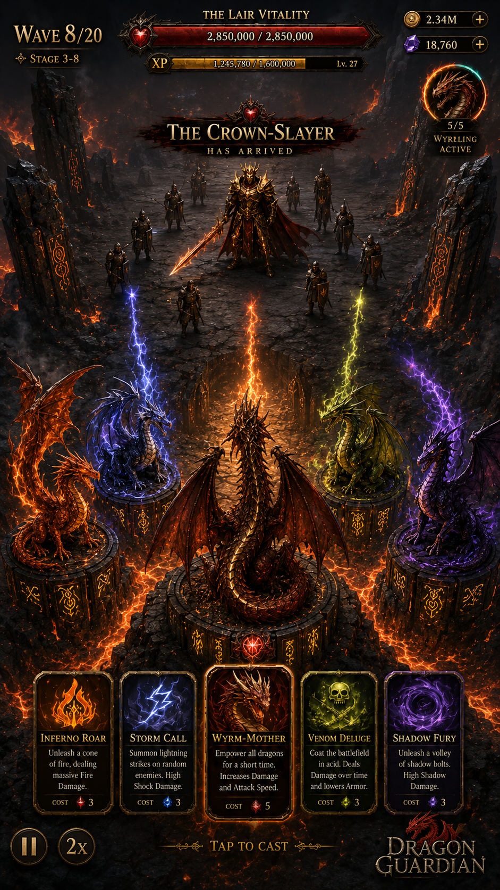
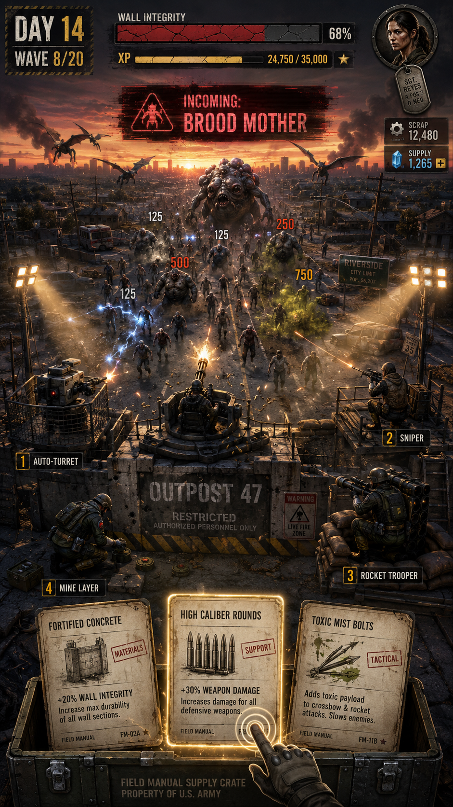
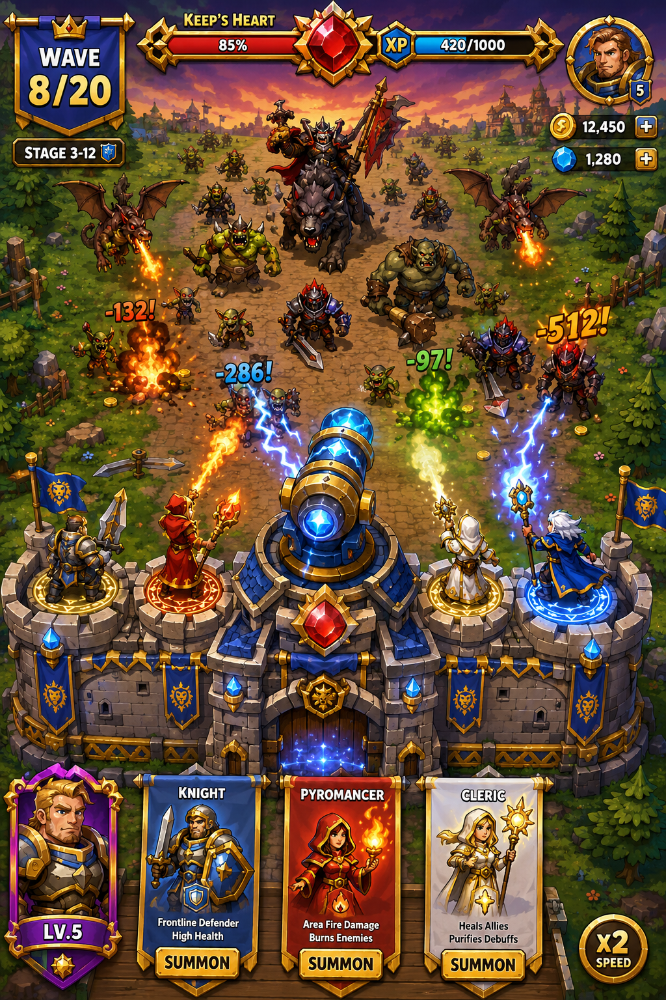

1.
Kubova iterace jako baseline
Wyrm's Lair, The Bunker a Realm's Keep otestovat jako první CPI mapu proti aktuálnímu MF baseline.
3 témata
5 geo
72h kill rule
Návrh propojuje Kubův Growth brief se směrem od CEO / Jirky / Peťka: nejdřív otestovat tři silné reskiny, paralelně ale připravit levnější casual signál pro minimální CPI typu We Are Warriors, Kingdom Rush, Rush Royale a Wittle Defender.
Neuzavírat se hned do high-production fantasy. Bez potvrzeného LTV má větší smysl nejdřív získat levný CPI signál, a až potom zvedat rozpočet na plný art rebuild.
Wyrm's Lair, The Bunker a Realm's Keep otestovat jako první CPI mapu proti aktuálnímu MF baseline.
Do druhé iterace připravit We Are Warriors / Kingdom Rush / Rush Royale / Wittle Defender varianty s nižší výrobní náročností.
Každé vybrané téma rozdělit na landing page only, playable only a kombinaci. Tím oddělíme theme appeal od gameplay proofu.
Dodané CPI vizuály jsou načtené přímo z assetů a záměrně prezentované jako NOX game-card panely: silný obrázek, tmavý overlay, cyan/magenta akcenty a krátký produkční komentář.

Dark premium dragon defender, lair vitality, elemental dragons, volcanic platforms. Nejvyšší production value.

Mil-spec zombie bunker, wall integrity, field manuals, horde clarity. Nejnižší reskin friction vůči MF.

Cartoon fantasy, hrdinové na hradbách, summon karty, bright greenfields. Nejbližší Peťko/Jirka casual směr.
Cíl není rozhodnout finální produkt. Cíl je levně zjistit, který fantasy / zombie / cartoon wrapper zlepší CPI proti MF baseline v US, DE, KR, SE a JP.
Nejsilnější dlouhodobý pivot potenciál: dragon collection, mother-and-brood hook, premium painted-realism. Výroba je ale dražší a méně CPI-minimalistická.
Nejlevnější cesta pro produkční validaci: MF DNA se zachová, mění se framing. Dobré pro male 28-45, jasný 3sekundový read, nízká mechanická změna.
Nejrelevantnější pro aktuální CEO/Jirka/Peťko signál. Rush Royale / Kingdom Rush proximity, hero summon psychologie, ale konflikt s gritty MF brand stance.
Tyhle směry berou známou herní nostalgii jako CPI shortcut, ne jako kopii IP. Cílem je rychle ověřit, jestli funguje monster collection, age-up RTS progress, tactics board nebo loot fantasy silněji než čistý MF wrapper.
Pokemon-style hook bez přímé IP: hráč brání arénu pomocí elementálních creature evolucí. Každá wave ukáže capture, evolve nebo type advantage moment.
Age of Empires-like směr: vesnice roste do pevnosti, workers sbírají zdroje, archers/cavalry/siege drží wall a velké tlačítko age-up dává instant power spike.
Dungeon Keeper / old-school fantasy feeling: hráč staví místnosti, summony a pasti pod pevností. CPI hook je obrácený defender: chráníme dark core před hrdiny.
Advance Wars / Heroes map vibe: malé jednotky na čitelné grid mapě, commander ability a jednoduché counter matchupy. Vhodné pro statiky i playable.
Army Men / Worms-style nostalgia: tabletop battlefield, plastové jednotky, destructible barricades a slapstick explosions. Levnější styl než premium fantasy.
Diablo-like progression bez temného heavy art scope: waves drop gear, shrine upgrades a legendary tower pieces. Dobré pro meta/IAP promise v jednom screenu.
Jirka input: Kingdom Rush, Rush Royale, Warcraft a Clash Royale jako jeden cartoon-fantasy bucket. Testovat jako hero/tower/summon wrapper, ne jako oddělené produkce.
WeAreWarriors, Potato a Stickman jsou nejrychlejší cheap-read směr: pár jednotek, jasná evoluce, velké numbers, minimum art detailu.
Masivní armor, factions, siege a dark battlefield. Silné pro male audience, ale držet vlastní frakce a nepadat do příliš drahého production looku.
Extraction/squad sci-fi wrapper jako kontrast k fantasy: shield base, drones, scavenged weapons, outdoor raids. Dává šanci ověřit, jestli sci-fi selhává jen kvůli MF framingu.
Vampire Survivors-like horda: auto-attack, XP gems, upgrade draft a přežití 30 sekund. Hodí se pro playable, kde se CPI opře o okamžitý power fantasy loop.
Krátkodobý viral CPI test: absurdní enemies, meme naming, hyper-readable chaos. Použít jen jako isolated creative experiment, ne jako produktový pivot.
Blocky UGC look, jednoduché combat toys, barevné ability drops. Dává šanci levně testovat mladší casual signal bez drahých character sheets.
Zůstává nejčistší reskin MF DNA: bunker, wall, horde, weapons. Pokud chceme rychlý reality check proti fantasy, zombie je pořád nejlevnější kontrolní varianta.
Protože zatím nemáme potvrzené LTV, nejbezpečnější next step je nehonit nejdražší premium fantasy, ale připravit druhou iteraci, která se agresivně ptá: kolik stojí nejlevnější srozumitelný install pro stejný core loop?
| Směr | Proč testovat | Vizuální pravidlo | Riziko |
|---|---|---|---|
| Kingdom Rush / Realm TD | Nejbližší kompromis mezi fantasy CPI a tower-defense očekáváním. | Heroic adult cartoon, výrazné obrysy, žádné chibi. | Vyšší asset náročnost než stickman / warriors. |
| We Are Warriors-like | Extrémně rychlý ad read, jednoduchý progression fantasy, levná výroba variant. | Velké armády, evoluce jednotek, čistý battlefield, minimální UI šum. | Méně premium signál, horší přenos do dlouhodobé meta hry. |
| Wittle Defender twist | Peťkův konkrétní input: jasný defender loop, casual-friendly, vhodné pro playable. | Jedna pevnost, jednoduché upgrade volby, viditelné power spikes. | Nutné odlišit od compů a nepůsobit jako kopie. |
| Monster trainer / Empire ages | Nostalgické game hooks mohou dát silnější okamžitý read než obecná fantasy: capture/evolve nebo age-up jsou známé motivace. | Vlastní creatures/factions, jasná evoluce nebo civilizační upgrade, žádný přímý IP lookalike. | Je potřeba držet reference jako inspiraci, ne jako vizuální kopii. |
| Warcraft / Warhammer / Clash cluster | Fantasy boj, frakce a hero/tower archetypy mají nejsilnější tržní signál z konkurence. | Vlastní frakce, výrazné silhouettes, cartoon až grim fantasy podle testované creative line. | Nejvyšší riziko drahého art scope a IP-lookalike interpretace. |
| Brainrot / Roblox / Survivor | Levné, hyperčitelně casual hooks pro rychlý CPI reality check mimo fantasy core. | Jedna silná gag nebo loop mechanika: meme enemy, block battler, auto-attack survival. | Může přinést levný install, ale slabší fit pro dlouhodobou MF meta. |
| Arc Riders / Zombie control | Ověříme, jestli problém sci-fi je obecný, nebo jen aktuální framing; zombie zůstává low-friction kontrola. | Squad raid sci-fi versus bunker horde, oboje s jasnou base-defense kompozicí. | Sci-fi může znovu dopadnout blízko baseline; zombie může být příliš generická. |
| JirCore meta game | Druhá iterace pro kombinace: jednoduchý CPI hook + hlubší collection/meta slib. | Map progression, hero unlock, squad merge/evolve, resource loop. | Nesmí rozbít čistotu prvního CPI signálu. |
Jednoduché rozdělení sníží interpretační šum: víme, jestli táhne samotný theme promise, interaktivní gameplay, nebo až jejich kombinace.
Statické/video kreativy vedou na jednoduchý store-like nebo web LP claim. Měří čistý theme appeal bez nutnosti dokončovat playable.
Krátký core loop: výběr jedné ze tří karet, instant upgrade, obrana proti wave. Měří, jestli gameplay wrapper přenáší install intent.
Hook video nebo statika otevře téma, playable potvrdí mechanic. Nejlepší kandidát pro winner scaling po prvním cutu.
Ondra separuje základní assety; já na ně navážu GPT Image workflow pro spritesheety, varianty a rychlé creative iterace.
Meeting by měl skončit ne debatou o nejhezčím tématu, ale jasným zadáním pro production lock a UA měření.
| Rozhodnutí | Doporučení | Owner |
|---|---|---|
| Greenlight všech 3 testů v Round 1? | Ano, ale explicitně s druhou casual iterací jako navazující větví. | CEO + Growth |
| Budget split | 35% Wyrm's Lair, 30% Bunker, 25% Realm's Keep, 10% reserve pro winner/casual fast follow. | Growth + Finance |
| Brand stance pro cartoon fantasy | Schválit jako CPI experiment, ne jako závazný product pivot. | Brand lead |
| Baseline CPI + geo split | UA dodá aktuální MF benchmark, minimum installs a 72h kill authority. | UA lead |
| Asset workflow | Ondra připraví separované assety, následně GPT Image spritesheets a creative varianty. | MKT art + David |